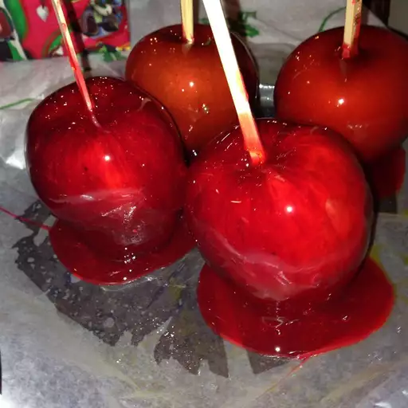

Candy Apples
Back to recipes

Ingredients
- cooking spray
- 15 craft sticks
- 15 medium apples, washed and dried
- 2 cups white sugar
- 1 ½ cups water
- 1 cup light corn syrup
- 8 drops red food coloring
Steps
- Lightly grease cookie sheets. Insert craft sticks into whole, stemmed apples.
- Combine sugar, water, and corn syrup in a medium saucepan over medium-high heat. Bring to a boil and insert candy thermometer; continue to boil, without stirring, until temperature reaches 300 to 310 degrees F (149 to 154 degrees C) or until a small amount of syrup dropped into cold water forms hard, brittle threads. Remove from heat and stir in food coloring.
- Holding each apple by its stick, dip in syrup, remove and turn to coat evenly. Place on prepared sheets to harden.
Source: https://www.allrecipes.com/recipe/21134/candied-apples-ii/